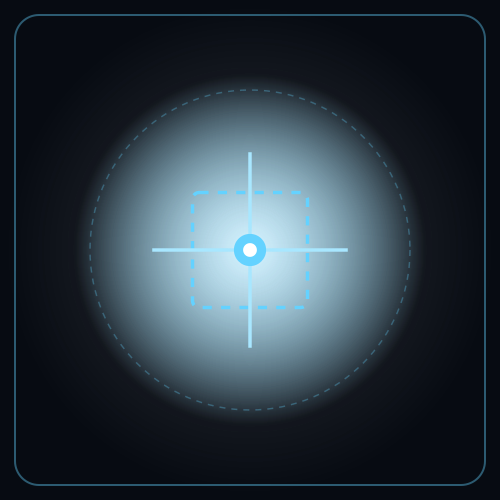

URBAN-CORE: THEMIS
Acústica Ambiental Forense (Maekawa ISO 9613-2 / RD 1367/2007) & Restauración Urbana (Reglamento UE 2024/1991)
Motor determinista dual en disco: 1) Acústica Forense Exterior (core/acoustic_maekawa_engine.py), que modela la propagación sonora bajo ISO 9613-2 y dimensiona pantallas fonoabsorbentes por difracción del número de Fresnel de Maekawa para garantizar los Objetivos de Calidad Acústica (Ley 37/2003 y RD 1367/2007); y 2) Restauración de Ecosistemas Urbanos (core/restauracion_urbana_ue2024.py), que audita la cobertura de dosel arbóreo urbano (UTC ≥ 10%, Art. 8 del Reglamento UE 2024/1991), mitigación de isla de calor (LST) y accesibilidad isócrona de 15 minutos One Health.

Propósito Operativo & Resolución Práctica
Apantallamiento acústico de infraestructuras viarias/portuarias, dosel arbóreo UTC ≥ 10% y salud urbana
Vías con alto tráfico pesado vulneran los límites nocturnos de ruido (L_n > 55 dBA) exponiendo a los ayuntamientos y ministerios a sentencias judiciales, mientras los nuevos PGOU incumplen la cuota verde europea.
Dimensiona pantallas acústicas por difracción de Maekawa (4.5 m de altura logrando ΔL_z = -11.4 dBA en GJ-10 El Musel) y audita la ganancia neta de dosel arbóreo urbano (UTC = 11.6%).
Cumplimiento en fachada residencial (L_den ≤ 65 dBA, L_n ≤ 55 dBA), ganancia neta verde del +0.76% en distrito de 125 ha, amortiguación térmica de -2.5 °C UHI y 94.2% de cobertura isócrona.
Ley 37/2003 del Ruido, Real Decreto 1367/2007 (Zonificación Acústica), UNE-ISO 9613-2, Art. 8 del Reglamento (UE) 2024/1991 de Restauración de la Naturaleza y Agenda Urbana Española.
Acústica ISO 9613-2 & Maekawa
Propagación acústica exterior y difracción en bordes de pantalla (core/acoustic_maekawa_engine.py):
Donde N es el número adimensional de Fresnel para la diferencia de camino óptico-acústico δ sobre la coronación de la barrera fonoabsorbente, acoplado al motor de auditoría de dosel arbóreo (core/restauracion_urbana_ue2024.py).
Doble Validación Real Auditada
1) Acceso Puerto de El Musel GJ-10 (Gijón) & 2) Distrito Urbano (125 ha):
- Acústica GJ-10 (BOE-A-2026-21156): IMD = 24.500 veh/día (19.5% pesados); pantalla de 4.5 m logra ΔL_z = -11.4 dBA cumpliendo L_den ≤ 65 dBA y L_n ≤ 55 dBA (RD 1367/2007).
- Restauración Urbana (125 ha): Certificación de 11.6% de dosel arbóreo urbano (UTC ≥ 10%) y ganancia neta de espacios verdes del +0.76% bajo el Art. 8 del Reglamento (UE) 2024/1991.
- Reducción de isla de calor superficial en -2.5 °C y 94.2% de población a menos de 12 minutos a pie de centros sanitarios.
Marco Legal & Directivas
- Ley 37/2003 del Ruido y RD 1367/2007: Zonificación acústica, objetivos de calidad (L_den, L_n) y emisiones acústicas (UNE-ISO 9613-2 / CNOSSOS-EU).
- Reglamento (UE) 2024/1991 (Art. 8): Restauración de ecosistemas urbanos, cero pérdida neta de espacios verdes y umbral de dosel arbóreo (UTC ≥ 10%).
- Directiva 2002/49/CE & Agenda Urbana 2030: Evaluación y gestión del ruido ambiental y planificación territorial One Health (OMS).